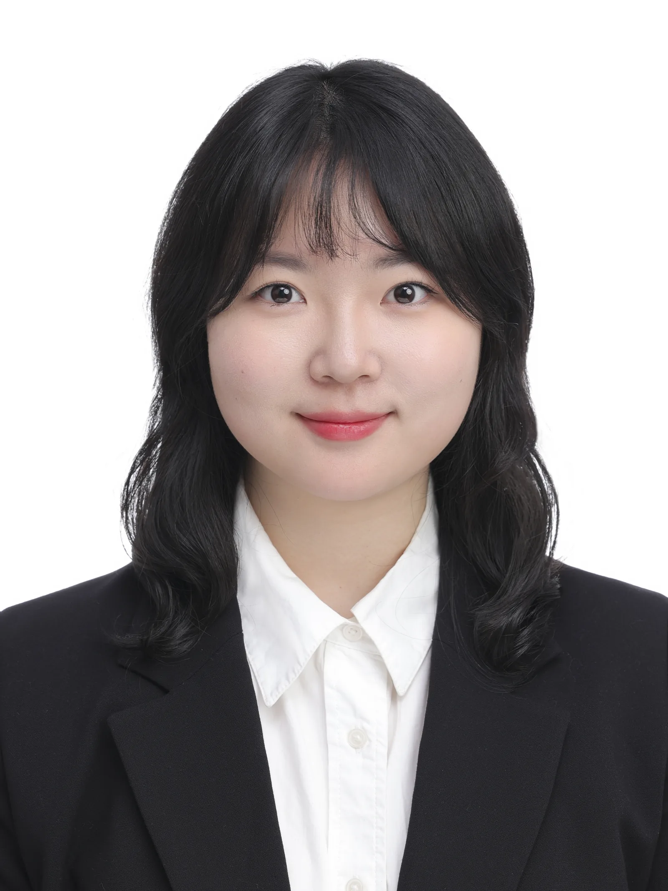
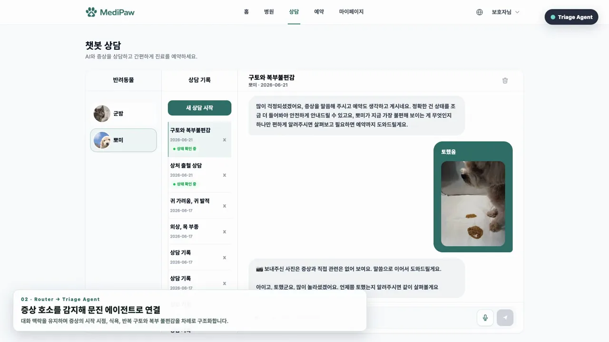
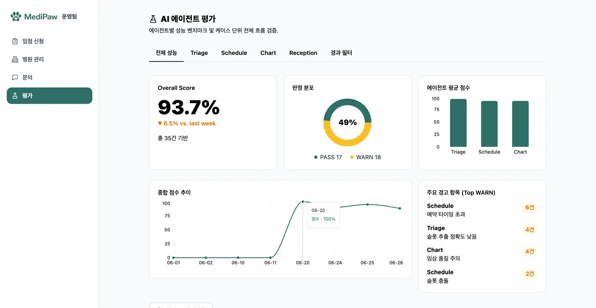

생화학 석사, CAR-T 세포치료제 연구원, qPCR 학술지원을 거쳐 데이터 기반 AI 서비스를 기획하고 있습니다. 현장의 비효율을 줄이기 위해 AI가 자동으로 처리할 영역과 사람이 최종 판단할 영역을 나누고, 고정된 정량 평가셋으로 제품 품질을 검증합니다. 동물병원 상담–문진–예약 흐름을 연결한 MediPaw에서는 PM을 맡아 평가셋 4종 설계와 문진 대화 개선을 담당했습니다.

동물병원 상담·문진·예약은 LLM 멀티에이전트가, 진단·처방은 수의사가 맡는 서비스
전화 상담과 종이 문진으로 운영되는 동물병원에서는 보호자가 같은 증상을 여러 번 설명하고, 수의사는 진료 중에 증상을 정리해야 합니다. 상담·문진·예약은 AI 에이전트가 채팅 한 흐름으로 맡고, 진단·처방은 수의사가 확정하도록 역할을 나눴습니다.

① PM — 범위 결정 · 매일 진행 점검 · 협업 규칙(자동 테스트 통과 후 코드 병합)
② 평가셋 — 문진·안전성·대화 메모리·채팅·예약 E2E 평가셋 4종 설계·실행
③ 문진 대화 개선 — 평가에서 찾은 문제를 수정하고 같은 200건으로 재비교
④ 서비스 구현 — 병원 입점 기획·구현 · 예약 후 경과 관리 에이전트 · 배포 안정화
문진 200건을 실행해 보니 마무리 답변이 보호자 증상 대신 사례 검색 결과를 설명했습니다(200건 전부). 질문이 보호자의 앞 답변과 이어지지 않고, 마무리는 “예약을 도와드릴까요?” 한 문장으로 고정됐습니다.
200건 대화의 문제를 유형별로 나누고, 다른 수정과 섞이지 않게 하나씩 고쳐 따로 실행했습니다.
문진 프롬프트의 말투 지시를 고치고, 한 턴에 질문 하나만 하도록 바꿨습니다. 직전 답변을 받는 한 구절 뒤에 질문을 잇고, 공감 표현은 반복하지 않게 했습니다. 20건으로 먼저 확인한 뒤 200건에 적용했습니다.
· 검색 결과를 언급한 대화 200 → 0건
· 질문 연결률 58 → 72%
· 고정 문구로 끝난 대화 199 → 0건
· 공감 2턴 연속 21 → 6건
수정 후 재실행에서 199/200건 문진 완료, 평균 3.7턴이었습니다. 재실행 답변 중 진단을 단정한 표현은 0건이었습니다(정규식 검사).

해커톤·공모전 출품작과 팀 프로젝트입니다.
차량·드론 영상으로 도로 파손을 자동 탐지하는 해커톤 과제를, 그 길을 지나는 러너·산책자의 제보까지 확장했습니다. 순찰만으로는 이면도로까지 확인하기 어렵기 때문입니다. 제보 사진은 AI가 1차 판별하고, 운영자가 승인한 제보는 행정동별 보수 우선순위에 반영됩니다.
신라 시대 역할(왕·학자·화랑 등)을 고르면 하루 코스를 추천받고, 방문 퀘스트·음성 도슨트·3D 캐릭터 꾸미기로 경주를 여행하는 웹앱입니다. 홈 화면과 관광 데이터, 다국어 처리를 맡았습니다.
자녀가 대신 확인하던 약·병원 정보를 어르신이 직접 보도록 OCR·공공데이터·무장애 길찾기를 연결한 웹 프로토타입입니다. PM으로 서비스 구조와 API 흐름을 설계했습니다.
SK네트웍스 패밀리 AI 캠프 팀 프로젝트로, 건강 질문에 문헌 근거를 함께 보여주는 RAG 챗봇입니다.
부트캠프 초기 데이터 수집·전처리·모델링 기초를 다진 프로젝트입니다.
생화학 연구에서 시작해 바이오 실무를 거쳐 AI 서비스 기획·개발로 이어진 경력입니다.
BioRAG에서 Hybrid RAG 검색과 Streamlit UI를 맡았습니다. 최종 프로젝트 MediPaw에서는 PM을 맡아 평가셋 설계, 문진 대화 개선, 병원 입점·경과 관리 기능, 배포 안정화를 담당했습니다.
Roche사 qPCR 장비 고객의 실험 문제(Ct 이상, 비특이 증폭 등)를 원인별로 나눠 분석하고 프로토콜 최적화 방안을 제공했습니다. 제품별 판매 실적(YoY)을 분석해 수요 변화와 부진 원인을 도출했습니다. 고객 교육에서 실험을 함께 진행했고, 그 실험에 사용한 시약이 최종 구매로 이어졌습니다.
회사 파이프라인에 따라 CAR-T를 제작하고 효능·독성을 평가했습니다. 유전자 클로닝부터 바이러스·CAR-T 제작, FACS 순도 확인, cytotoxicity·ELISA(in vitro)와 IVIS(in vivo) 평가까지 수행했습니다. 이 평가 결과를 바탕으로 팀에서 1건은 독성으로 개발을 중단하고 1건은 개발을 지속했습니다.
Xenopus laevis 모델의 실험 프로토콜을 구축하고 섬모 운동성을 정량 분석했습니다 (GPA 4.2 / 4.3). 실험 조건과 결과를 구분해 검증하는 경험이 이후 AI 응답 평가와 실패 케이스 분석으로 이어졌습니다.
SCI(E) 국제 학술지에 게재된 대표 연구 성과입니다.
Xenopus laevis 배아 모델을 활용하여 다섬모세포에서 Ruvbl1의 기능을 분석한 연구입니다. Ruvbl1 유전자 결손 시 섬모의 형태는 유지되지만 기저소체 극성(basal body polarity)이 선택적으로 교란되어 유체 흐름이 현저히 감소함을 확인했습니다. 공동 1저자로 실험 프로토콜 구축과 섬모 운동성 정량 분석에 참여했습니다.
연락처와 프로젝트 저장소 링크입니다.